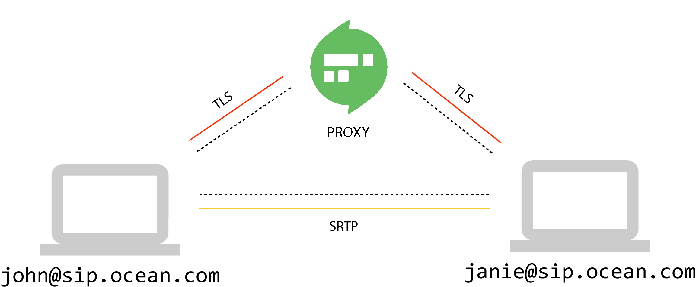

Securing the Signal
Follow this guide to secure the signaling between your endpoints and Routr. Keep in mind that Routr will only secure the signaling and that the endpoints are ultimately responsible for securing the media.

Creating a Java Keystore(.JKS) Certificate
Routr needs a keystore (.jks) in order to properly handling the certificates. The following steps will create a valid keystore file using a self-signed method or using the free Let's Encrypt service.
Creating a self-signed Certificate
Perhaps the easiest way to create a valid certificate for Routr is using a self-signed certificate. To generate the certificate change into etc/certs in your Routr installation and run the following script:
keytool -genkey -keyalg RSA \
-noprompt \
-alias routr \
-keystore domain-certs.jks \
-storepass changeit \
-keypass changeit \
-validity 365 \
-keysize 2048 \
-dname "CN=domain.com, OU=OSS, O=Your Company Inc, L=Sanford, ST=NC, C=US" \
-ext SAN=dns:your.domain.com,dns:localhost,ip:127.0.0.1
Remember to adjust the values to match your project's information.
:mag_right:
WSSwill not work with a self-signed certificate. However, you can add a security exception by usinghttpsinstead ofwssin your browser's search bar and then accepting the security certificate.
Creating a Certificate using Let’s Encrypt
The recommended way to create a valid certificate for Routr is using the free service Let's Encrypt. Please go to https://letsencrypt.org/ for details on how to install the required tooling. To generate the certificate, use the following steps:
1. Create keys
certbot certonly --standalone -d domain.com --email admin@domain.com
Change to the directory where the certificates were created(normally at /etc/letsencrypt/live/domain.com).
2. Create a PKCS12 file containing full chain and private key
openssl pkcs12 -export -in fullchain.pem -inkey privkey.pem -out pkcs.p12 -name domains-cert.jks
Please make note of the password since you will need it in the following step and also for your settings in Routr.
3. Convert PKCS12 to Keystore
keytool -importkeystore -srckeystore keystore.pkcs12 -srcstoretype PKCS12 -destkeystore domains-cert.jks
Installing the Certificate in Routr
To enable secure signaling in Routr, copy your certificate in etc/certs and edit the file config/config.yml to look like this:
apiVersion: v1beta1
metadata:
userAgent: Routr v1.0
spec:
securityContext:
keyStore: etc/certs/domains-cert.jks
trustStore: etc/certs/domains-cert.jks
keyStorePassword: 'changeit'
trustStorePassword: 'changeit'
keyStoreType: 'jks'
debugging: true # Enabled debug only for testing
transport:
- protocol: tls
port: 5061
...
With the property spec.securityContext.debugging set to true you can get some valuable information about the status of the configuration. You can also test your configuration using the following command:
openssl s_client -host 192.168.1.2 -port 5061 # Remember to use Routr's IP
Setting up the Sip Phones
For the purpose of this guide, we are using
Blink Pro.
Go to the account that you want to secure, select Advanced -> Sip Signaling and change the parameter Primary Proxy to ${proxyHost}:${proxyPort};transport=tls. See the example in the following image:
If everything went well you should see a green padlock like the one in the image bellow: